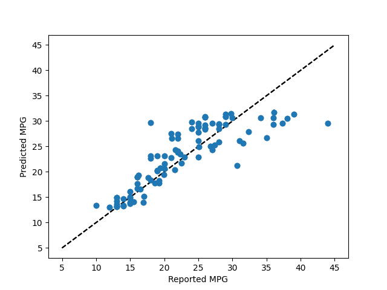

Note
Click here to download the full example code
Plotting Bagging Regression Error Bars¶
This example demonstrates using forestci to calculate the error bars of
the predictions of a sklearn.ensemble.BaggingRegressor object.
The data used here are a classical machine learning data-set, describing various features of different cars, and their MPG.
# Regression Forest Example
import numpy as np
from matplotlib import pyplot as plt
from sklearn.ensemble import BaggingRegressor
from sklearn.svm import SVR
import sklearn.model_selection as xval
from sklearn.datasets import fetch_openml
import forestci as fci
# retreive mpg data from machine learning library
mpg_data = fetch_openml(data_id=196)
# separate mpg data into predictors and outcome variable
mpg_X = mpg_data["data"]
mpg_y = mpg_data["target"]
# remove rows where the data is nan
not_null_sel = np.where(mpg_X.isna().sum(axis=1).values == 0)
mpg_X = mpg_X.values[not_null_sel]
mpg_y = mpg_y.values[not_null_sel]
# split mpg data into training and test set
mpg_X_train, mpg_X_test, mpg_y_train, mpg_y_test = xval.train_test_split(
mpg_X, mpg_y, test_size=0.25, random_state=42
)
# Create RandomForestRegressor
n_estimators = 1000
mpg_bagger = BaggingRegressor(
base_estimator=SVR(), n_estimators=n_estimators, random_state=42
)
mpg_bagger.fit(mpg_X_train, mpg_y_train)
mpg_y_hat = mpg_bagger.predict(mpg_X_test)
# Plot predicted MPG without error bars
plt.scatter(mpg_y_test, mpg_y_hat)
plt.plot([5, 45], [5, 45], "k--")
plt.xlabel("Reported MPG")
plt.ylabel("Predicted MPG")
plt.show()
# Calculate the variance
mpg_V_IJ_unbiased = fci.random_forest_error(mpg_bagger, mpg_X_train, mpg_X_test)
# Plot error bars for predicted MPG using unbiased variance
plt.errorbar(mpg_y_test, mpg_y_hat, yerr=np.sqrt(mpg_V_IJ_unbiased), fmt="o")
plt.plot([5, 45], [5, 45], "k--")
plt.xlabel("Reported MPG")
plt.ylabel("Predicted MPG")
plt.show()
Total running time of the script: ( 0 minutes 6.847 seconds)